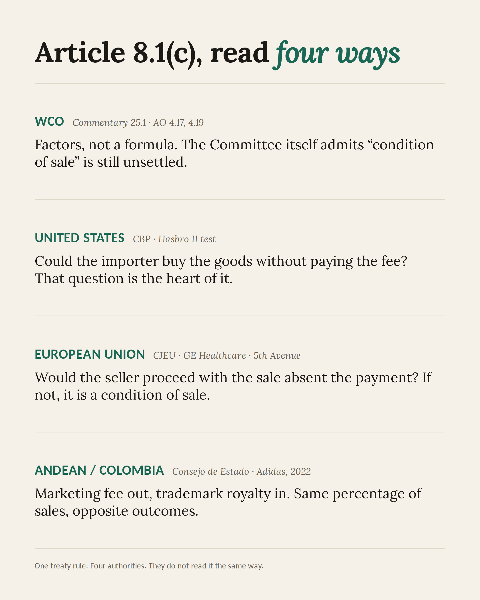
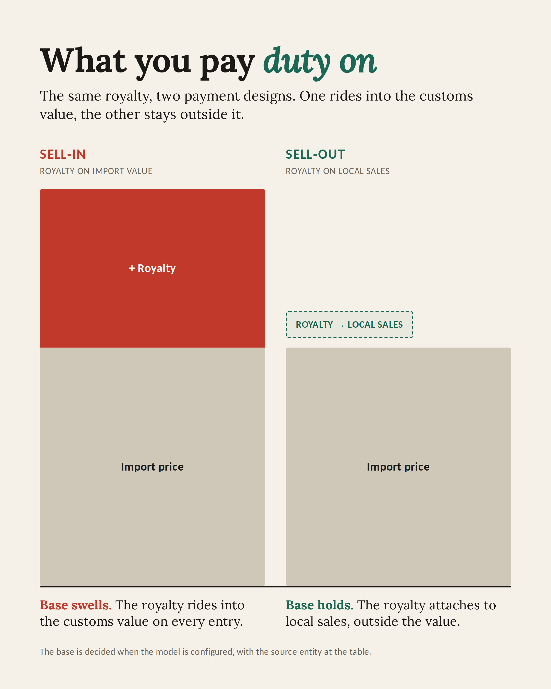

A single treaty provision governs whether a royalty enters the customs value of imported goods. Four authorities read it in four ways, and the divergence is widening. The argument of this article is that the decisive work happens at the contract drafting table, not in the audit room, and that a practitioner who understands where a royalty lives can settle the question before the first shipment moves.
The question customs valuation keeps reopening
As I write this, licensed merchandise for the 2026 FIFA World Cup is clearing customs in three countries at once. The tournament is co-hosted by the United States, Mexico and Canada, and somewhere among the host ports a customs officer is reviewing a value declaration that turns on one question: is the licensing fee the importer paid part of the price of the goods, or is it payment for something else? The question is old, and it remains one of the least settled in customs valuation. What makes it concrete this summer is volume and timing, arriving in exactly the markets where the answer diverges most.
At the centre sits Article 8.1(c) of the Agreement on Implementation of Article VII of the GATT 1994, the WTO Customs Valuation Agreement. It adds to the price actually paid or payable the royalties and licence fees related to the imported goods that the buyer must pay, directly or indirectly, as a condition of sale, to the extent those amounts are not already included in the price. The text is short. Its application is anything but.
Here is the proposition that fifteen years of customs work has settled for me, and that no audit defence can retrofit. The fate of a royalty is decided at the drafting table, before the first shipment, not in the audit room. The authority does not, in the end, examine the goods. It examines the concept under which the payment is made, as the contract defines it. Draw that line cleanly, and the payment stays out of customs value. Leave it loose, and the authority fills the gap with its own reading, which rarely favours the importer.
One provision, four conditions
Before turning to how different authorities diverge, it is worth restating what the provision actually requires, because the divergence lives inside these conditions rather than around them. For a royalty to be added to the customs value, four things must hold together, and the failure of any one defeats the addition.
Related to the goods. The royalty must relate to the goods being valued. In practice this means the imported goods incorporate the intellectual property, or are manufactured using it, such that the right paid for is embodied in what crosses the border. A trademark affixed to the imported article relates; a fee for know-how used only to complete or distribute a product after import is a weaker link, and often no link at all.
A condition of sale. The buyer must be required to pay the royalty, directly or indirectly, as a condition of the sale of the goods for export. The working test that authorities apply, in one form or another, is whether the buyer could obtain the imported goods without making the payment. If it could not, the payment is treated as a condition of sale, even where the contract of sale is silent and the royalty is paid to a third party.
Objective and quantifiable data. Any addition may be made only on the basis of objective and quantifiable data. Where a single royalty covers both dutiable and non-dutiable elements, or both imported and domestically produced goods, an apportionment is required, and that apportionment must rest on figures the importer can document rather than on estimate. This requirement is the practitioner’s most useful lever, because it converts a vague dispute about character into a concrete dispute about numbers.
Not already in the price. Finally, the royalty is added only to the extent it is not already reflected in the price actually paid or payable. An amount already inside the invoice is not added twice. This condition is rarely contested, but it frames the others: the whole exercise is about what the buyer pays for the goods, assembled from every payment that functions as part of that price.
Four readings of the same rule
One treaty rule, but it is enacted, interpreted and litigated in at least four places, and they do not read it the same way.
The World Customs Organization speaks through its Technical Committee on Customs Valuation. Commentary 25.1 sets out a non-exhaustive list of factors that point to a payment being a condition of sale, among them whether the sales contract references the royalty, whether the licence agreement references the sale, and whether breach of the licence can terminate the supply. The Advisory Opinions swing both ways. In Advisory Opinion 4.17 a franchise fee was kept out of customs value, because it remunerated the use of the franchisor’s brand and system in the country of importation rather than the imported goods themselves. In draft Advisory Opinion 4.19 a royalty was brought in, where bulk goods are merely converted into marketable form without patented processing. The Committee itself has acknowledged what practitioners live with daily, that there is an emerging split among countries over what condition of sale actually means. Do not mistake the instruments’ formal status for weakness. The Technical Committee is the standing expert forum of the valuation system, and its Commentaries and Advisory Opinions, interpretive rather than binding on their face, are in practice the material administrations and courts reach for first. The Andean courts have said so expressly: they are instruments of interpretation that authorise the application of the Agreement’s rules in the light of their content, and the Adidas court decided the condition-of-sale question by running the facts through Advisory Opinion 4.11. A practitioner who cites them is not citing soft law into the void. He is citing the text the decision will quote back.
The United States enacted the same rule as 19 U.S.C. § 1401a(b)(1)(D). Its working framework comes from a 1993 General Notice, known as the Hasbro II ruling, which asks three questions: was the merchandise manufactured under patent, was the royalty involved in its production or sale, and could the importer have bought the product without paying the fee. Customs and Border Protection has said the third question goes to the heart of whether the payment is a condition of sale, and the trend across recent rulings runs toward inclusion. In the Sports Authority decision, CBP found a third-party royalty dutiable because the importer could not have contracted with the manufacturer at all without first entering the licence. Two features make the American file the most navigable of the four. The case law sets a hard default: since Generra Sportswear, the Federal Circuit’s presumption is that any payment made by the buyer to the seller forms part of the price actually paid or payable, and the importer carries the burden of proving a payment out. And the administrative record is radically public: CBP’s headquarters rulings on royalties sit in the searchable CROSS database, which means an importer can read, before structuring a licence, how the authority has already decided fact patterns adjacent to its own. No other jurisdiction in this article hands the practitioner that much of the examiner’s own reasoning in advance.
The European Union has built its reading through the Court of Justice. In GE Healthcare the Court held that a royalty paid to a company related to both buyer and seller is a condition of sale, and framed the test in one line: would the seller proceed with the sale absent the payment. Three years later, in 5th Avenue, it folded an exclusivity payment into customs value, where a buyer paid the seller a share of its turnover for exclusive distribution rights in a territory. The instructive part is what that judgment leaves open. Not every payment for distribution rights is dutiable. A contract drafted to disconnect the payment from the goods, and to keep it from functioning as a condition of the export sale, can still stay outside the value. The drafting does the work.
Colombia, applying the Andean Community framework under Decision 571 and Resolutions 846 and 1684, produced the clearest recent illustration. In December 2022 the Consejo de Estado decided the Adidas Colombia case. The company paid two charges to its German parent, both calculated as a percentage of net sales: an international marketing fee of four percent, and a royalty of six percent for trademark and know-how. The court split them. The marketing fee fell outside customs value, because advertising and marketing are simply not among the additions Article 8 permits. The royalty went in. Running the four-condition test, and leaning on Advisory Opinion 4.11, the court held that the link among the related parties was enough to make the royalty a condition of sale, even though the goods were bought from an affiliate in Panama while the royalty was paid to the parent in Germany. The Adidas reasoning is the Andean expression of a logic that CBP and the Court of Justice reach by their own routes.

The Andean layer, past Bogotá
The Andean system deserves one more paragraph than it usually gets, because it is the only one of the four with a supranational court sitting above the national authorities. The Tribunal de Justicia de la Comunidad Andina, in Quito, issues prejudicial interpretations that bind the courts of Bolivia, Colombia, Ecuador and Peru, and its royalties docket has been active. In Interpretation 618-IP-2019, answering a Peruvian consultation, the Tribunal worked through the addition of royalties on imported inputs and drew the distinction this article turns on: an input that arrives without the intellectual property embedded in it gives no reason to pay a royalty, and no basis for an addition. The Tribunal’s own thematic line states the principle plainly — royalties paid on the commercialisation of a finished product do not enter the customs value of the imported inputs used to make it. That is the suspensive-regime defence, elevated to community doctrine.
A 2023 interpretation, consulted by the customs chamber of the Superior Court of Lima, pushed into the harder terrain of royalties paid to third parties related to the seller, under Article 26 of the community regulation, and confirmed that the authority must weigh the totality of the arrangement, contract of sale and licence agreement together, before treating the payment as a condition of sale. The same interpretation addressed what the WCO’s Commentaries and Advisory Opinions actually are in the Andean order, instruments of interpretation rather than freestanding law, which matters to any practitioner who has watched an auditor cite Commentary 25.1 as if it were statute.
Peru then did what closes the loop between doctrine and the entry desk. In May 2026, SUNAT folded the Tribunal Fiscal’s valuation criteria and the amendments that Resolution 2486 made to the community regulation into its operating procedure for valuing merchandise, DESPA-PE.01.10a, by Superintendence Resolution 000102-2026. Case law is becoming checklist. The reading a defence once had to argue is now written into the procedure the reviewing officer opens on screen, which cuts both ways: the importer whose contract matches the doctrine clears faster, and the one whose contract is loose meets an objection that no longer needs to be improvised either.
Where the royalty lives: regime and the state of the goods
The variable that resolves most cases before those four conditions are ever reached is the customs regime and the state of the goods. It is the question I ask first, and it disposes of more disputes than any single piece of case law.
Under a suspensive regime, an importer brings in inputs to transform and re-export. Raw material, packaging, components. The royalty for a brand and its know-how does not live in a coil of laminate or a carton of cans. It lives downstream, in the finished licensed product that leaves the plant later. The WCO has captured this directly: a royalty for the right to manufacture and sell a licensed preparation relates to that preparation, not to the imported raw material used to make it.
I have defended that line in practice. I once carried the file on a multi-million-dollar valuation audit centred on royalties, run against an export-manufacturing operation under an inward-processing regime. The finding opened the way these findings usually open, at its maximum: the authority saw the licensed brand and reached for every entry it could touch. Part of what it reached for was raw material, shipped in industrial bulk, that carried on its sacks the same brand name as the finished licensed product it would later become. The mark was on the packaging; the authority read the mark as the royalty. The defence took the finding apart step by step, with evidence, entry by entry: bulk input is not the licensed product, the royalty remunerated the finished good, and the licence itself drew a further line the authority had not read, since no royalty accrued at all on goods produced within the region. The matter escalated the way these matters do, and it was won where they are usually won, before the customs tribunal, on the strength of the contract. The defence was not improvised when the audit letter arrived. It had been written, in the contract, years earlier.
The real exposure sits at the other pole. Definitive regime, finished branded goods. There the royalty can be embedded in the very thing you import, and the condition-of-sale test bites with full force. So the operative question is not only what the payment remunerates. It is also this: what did you import, under which regime, and where does the royalty sit relative to that merchandise.
The unrelated buyer
The World Cup importer is the second archetype, and it behaves differently from the related-party manufacturer. Here the buyer has no ownership link to the seller. It buys finished branded goods outright, in the definitive regime, and pays a licensing fee for the right to import and sell product carrying someone else’s intellectual property, whether that is a film studio’s characters, a sports federation’s marks, or a global event’s branding. In that configuration the fee is usually tied straight to the importation. It is not a royalty on local manufacture, because there is no local manufacture. It is the price of being allowed to bring the branded goods in.
Authorities treat this archetype as the easy case, and they are right to. When an unrelated importer brings in point-of-sale material carrying a global brand, or toys licensed from an entertainment franchise, no one needs a valuation study to suspect a royalty exists somewhere in the arrangement. The standing request at the desk is the royalty letter: a statement from the licensor or the importer establishing whether a licence fee attaches to these goods and on what basis. An importer in this position should have that letter drafted before the first entry, consistent with the contract and with what the payments ledger will later show, because the question is not whether it will be asked. It is when.
When the fee is that closely bound to the import, the cleaner course is to treat it as dutiable from the outset and pay the entry tax proactively, rather than declare it out and absorb an assessment later, with interest and a penalty on top. This is where the relationship across the border earns its keep. A seller in the United States or Europe is well placed to support its Latin American buyer, by issuing the letters and documentation that let the buyer declare the fee correctly and pay what is owed at entry. That is supply-chain management, not merely compliance. It is the difference between a payment made cleanly and a surprise assessment that lands on the client months after the goods have sold through.
The distinction the importer has to hold onto is the one the whole question turns on. A fee paid for the right to import branded goods is not the same as a fee paid on local sales for the use of a brand in the territory. The first is bound to the imported merchandise. The second can be argued to remunerate the local operation. Tax the right concept and you are defensible. Blur the two, and the authority will resolve the blur against you.
Sell-in or sell-out: the design choice
Which brings the design choice into focus, the one that separates the practitioner who structures from the consultant who reviews after the fact.
Pay the royalty on the value of the imported merchandise, and you are paying sell-in. The charge is anchored to what crosses the border, and drags straight into customs value. On high-margin product, where the import price is a fraction of the eventual retail, you end up paying duty and VAT on a base that swells well beyond the goods themselves. Pay the royalty on what is actually sold in the local market, and you are paying sell-out. The charge is anchored to local commercialisation, which supports the argument that it remunerates the operation in the territory rather than the export sale of the goods, and that in turn strengthens the position under 8.1(c).

The same royalty, two payment designs, two opposite customs exposures. The 5th Avenue judgment is the cautionary case, since a turnover-based payment to the seller was caught. But the court’s own logic cuts both ways. Where the payment is structured and routed so that it does not function as a condition of the export sale, the importer keeps a real defence. That is a decision taken when the business model is configured, with the source entity in the United States or Europe at the table, not a problem discovered at the port.
The value declaration becomes a sworn instrument
Customs administrations have grown more exacting, and the value declaration is turning into a sworn instrument. The Andean Customs Value Declaration, the equivalent declaration under the EU Union Customs Code, and the reasonable-care obligation in the United States all converge on the same demand. The importer must state, under penalty, whether it pays royalties or licence fees related to the imported goods.
That shift changes the stakes. It converts the ambiguity of the payment concept from a fiscal question into a legal one. When you instruct your customs broker, yes or no, is there a royalty related to this merchandise, you are no longer filling a clerical field. You are fixing the content of a declaration the importer signs and answers for. And when the international payments are made, the concept behind each one has to be unambiguous: a royalty for importation, or a royalty for something else, an operation related to but distinct from the imported goods. The seller abroad can help here, by supplying the documentation that lets the buyer declare correctly and pay up front.
The declaration’s weakest link is not legal. It is informational. Licence agreements are among the most confidential documents a company holds, and in Latin American operations the sworn value declarations now demanded by the authorities are routinely signed by people who have never read them. The customs broker asks the standing question, is there a royalty related to this merchandise, and receives an answer from someone who does not know that accounts payable has been remitting one for years under a contract locked in a drawer two departments away. Everyone answered honestly. The declaration is still wrong, and it is still sworn.
The instinct that closes that gap belongs to the foreign-trade lead. When the licensed brand is on the goods, the question has to travel backwards: to finance and accounts payable, is anyone paying a licensor, under what description, since when; and to whoever holds the contract, what exactly does the payment remunerate. The durable fix is not heroic, it is a routine. The three parties who each hold a piece of the answer, finance and payables, foreign trade, and the custodian of the contract, meet on a recurring basis, so that the declaration is signed on knowledge rather than on absence of news, and so that mitigation plans exist before any finding: whether the royalty as actually paid attaches to importation, to local sales, or to another model entirely, decided proactively rather than discovered in an audit.
The audit arrives through accounts payable
Where does the finding actually begin? Not at the port, and usually not in the value declaration itself. It begins in accounts payable. The modern valuation audit walks the ledger of payables to foreign suppliers and licensors, then walks the bank statements behind it, transfer by transfer. Every international remittance has to answer to a concept, and every concept has to answer to a contract. A payment description that says royalties, sent to a licensor abroad, while the import declarations of the same period say no royalty relates to these goods, is not a nuance an auditor debates. It is a finding an auditor documents.
Authorized Economic Operator status raises this bar rather than lowering it. The certification that speeds an operator’s clearances rests on the commitment that its records reconcile, and the file assembled to earn the seal is the same file the valuation team opens. In Colombia the cross-check is built into the plumbing: import payments are channelled through the regulated exchange market under declarations that let the authority reconcile what was declared at customs against what was actually remitted abroad. The comparison the importer hopes no one runs is, in that design, a standing report.
Two consequences follow, and both are contractual. The first is timing. A royalty accrued on local sales is not a royalty accrued on importation, because the goods entered in one period sell in another, mixed with goods that never crossed a border at all. The second is double burden. The royalty remitted abroad already carries income-tax withholding at source; folding the same payment into the customs value means the one remittance is taxed at the border and taxed again as income. A contract that fixes what the royalty remunerates and when it accrues keeps those two charges on separate bases. A contract that leaves it loose invites the authority to collect on both.
I have operated the sophisticated version of this drafting. A European fashion group whose franchise model I worked under defined its fee not as a royalty on the sale of the imported garments but as remuneration for the use of the brand and the franchise system, measured against the operation and its audited performance. The payment was real, substantial, and recurring, and it was not intrinsically tied to the importation, because the contract had been written so that it was not. That is the drafting-table decision this article keeps returning to, executed by a licensor that understood the game.
Set expectations accordingly about where the argument is heard. When an authority detects a royalty concept in the payables, its first instinct is to load it into the import value, whole. The contract’s distinctions, the income-tax withholding already borne, the timing of accrual: none of that tends to prevail at the desk. It prevails on appeal. These cases climb the recursive ladder, through reconsideration, through the customs tribunal, and with real frequency to the courts, because the amounts at stake justify every step of the fight. Adidas Colombia itself is a second-instance judgment. The practical reading is not cynical, it is operational: build the file for the level where the case will actually be decided, not for the officer who opens it.
And discard the one strategy that does not exist. Concealing the payments from the foreign-trade file is not an option, because the system is built to see them: the exchange regime channels them, the payables ledger records them, the bank statements confirm them, and the AEO commitment promises they all reconcile. The choice was never between visible and invisible. It is between documented and undocumented.
Adidas Colombia shows the evidentiary floor from the other side, in two details worth keeping. The company made the timing argument, that the royalty base included goods never imported and sales from other periods, and lost it, because it produced no objective and quantifiable disaggregation to support the split across the 1,089 import declarations the DIAN had adjusted. The right argument died undocumented. And the condition of sale was proven out of the licence itself: the clause allowing the licensor to terminate for non-payment was, for the court, what made the royalty a condition of the transaction. The contract giveth and the contract taketh away. Clauses prove conditions, and clauses undo them.
What this means for the practitioner
The through-line connecting all of this to the wider hardening of customs enforcement now under way is that the authorities are reading contracts. The importer who can show, from the contract, what each payment remunerates is the one who is ready. In practical terms, that readiness is built at a handful of points, most of them upstream of the first import.
Decide the customs treatment of the licence when the business model is configured, alongside the free-trade-agreement analysis and the logistics design, not after the structure is fixed. Define in the contract precisely what each payment remunerates, separating the right to import branded goods from the right to use a brand in local manufacture and sale. Map the regime and the state of the goods for each flow, since inputs under a suspensive regime and finished branded goods under a definitive regime sit at opposite ends of the exposure.
Choose the payment design, sell-in or sell-out, with the customs-value consequence in view, and route the payment so it does not function as a condition of the export sale where that is the intent. Build the objective and quantifiable basis for any apportionment before it is needed, so that a partial, defensible addition is available rather than an all-or-nothing dispute. And align the value declaration and the broker’s instructions with the contract, securing from the foreign seller the documentation that supports a correct, proactive declaration at entry.
Conclusion
None of this is a matter of finding the right argument once the audit letter arrives. The practitioner who drafts the contract controls where the royalty lands. The one who inherits a loose contract spends the audit trying to recover ground that was already lost at signing. Across the WCO, the United States, the European Union and the Andean Community, the instruments differ and the case law diverges, but the work that decides the outcome is the same in every jurisdiction, and it happens long before the goods move, in the language that fixes what the money is for.